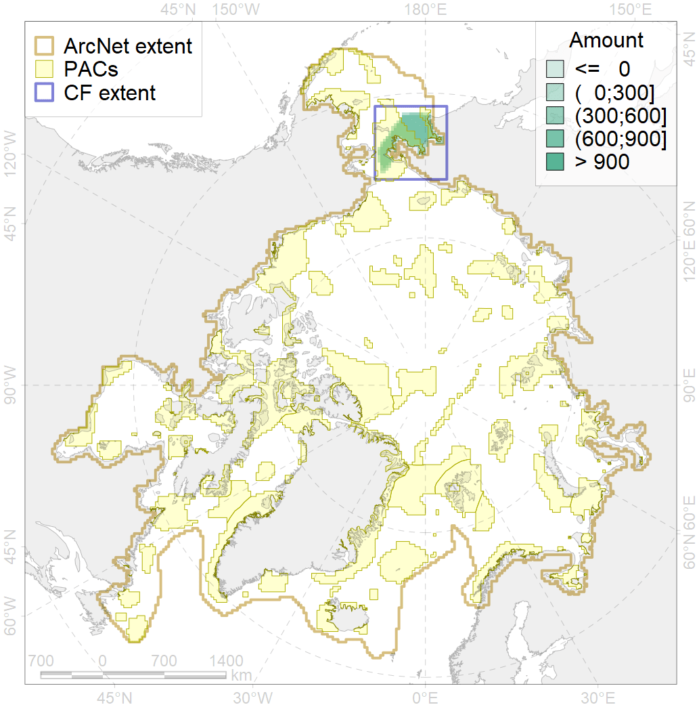
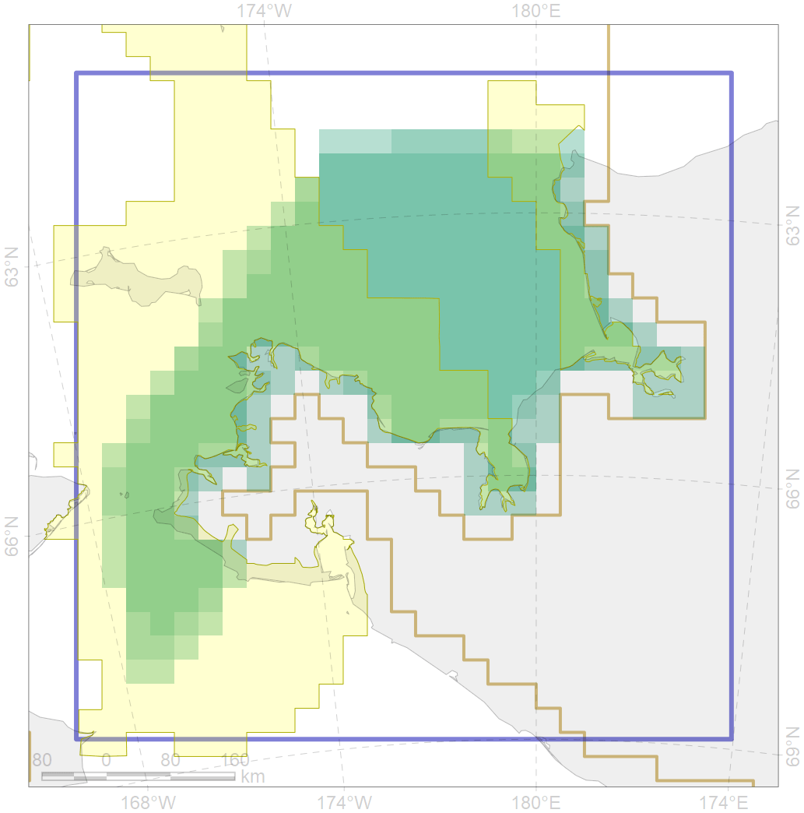

7011

| CF ID | 7011 |
| CF Name | Core of the Beringian Province of the North Pacific zoogeographical region |
| Time Period | 1900-2010 |
| Source(s) | Petryashov et al., 2013 |
| Seasonality | January - December |
| Depth Horizon | Sea floor |
| Methodology | Boundaries were driven on the basis of literature |
| Author Name | V. Spiridonov |
| Notes | |
| Conservation Target Set in the Scenario | 0.1865468 |
| Conservation Target Achieved in the Scenario | 0.590 (Scenario: 316.0%) |
| PAC ID | Proportion in the PAC | Contribution to ArcNet Target Achievement | PAC’s Contribution to the Achieved Target |
|---|---|---|---|
| 4 | 10.7% | 46.2% | 14.6% |
| 5 | 51.4% | 255.9% | 81.0% |
| inner | 62.1% | 302.0% | 95.6% |
| outer | 37.9% | 14.0% | 4.4% |